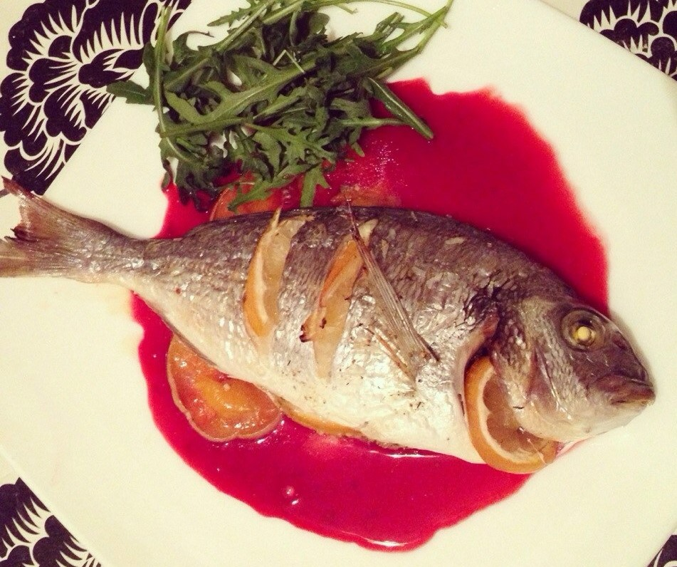

Из указанного количества ингредиентов получается 2–3 порции.

Для приготовления понадобится:
| Ингредиенты: | 700 г рыбы (дорада, сибас, судак и т.д.); половина большого или 1 маленький лимон; 50 мл растительного масла; зелень по вкусу; 3 зубчика чеснока; соль,перец. |
| Приготовление: | Рыбу (почищенную и выпотрошенную) смазать получившимся маринадом . Поставить в холодильник на 30 минут. Выложить в форму для запекания. Запекать при температуре 180 градусов в течение 35–40 минут. |